Let me ask you a question. Read this cartoon and
tell me, is this a good deal, or what? I don't mean the wager on Popeye
versus Kid Panther; I mean, is
Wimpy's offer of payment on Tuesday, for a hamburger today,
a good deal?

Well, you really can't tell; at least not without knowing exactly how much Wimpy is willing to pay next Tuesday for that "six-dollar burger" today, and, of course, how likely you are to collect. Although we laugh at Wimpy, many computer programs are devoted to figuring out exactly how much that burger is worth. We call this concept "the time value of money".
While Java has a host of different mathematical and
String functions, it's doesn't have any
functions dedicated to providing answers to questions like
this (such as those found in Excel). If you want those, you'll
need to build them yourself.
That's what you'll learn how to do in this section.
- We'll start by building a simple loan calculator, where you can enter the principle, (the hamburger's "list price"), the term, (exactly which Tuesday are we talking about), and the interest rate, (the rent, given the variables of risk and return).
- Then, we'll turn that calculation into a procedure and pass each of these values as parameters.
Then, in the next section, you'll learn how to turn that procedure
into a reusable function, just like the functions in the
Math class.
That's the plan; let's get started with our calculator.
Introduction to Finance
Suppose I lend you a thousand dollars today, on your promise to pay me back in a year. I first consider my options. With my thousand I could:
- put it in the bank and get back ten or twenty extra dollars at the end of the year.
- buy some shares of Google stock and hope that I can sell it for more than I paid for it at the end of the year.
- lend it to my brother-in-law who has a great invention, which he's sure will pay me back two thousand dollars after the year.
- lend it to you.
If I put it in the bank, baring revolution or another financial meltdown, I'm pretty sure to get my interest back. If I lend it to my brother-in-law, I may get my two thousand back, (but it would be a miracle).
Investing in Google and lending the money to you both probably fall somewhere in between those two extremes. Because there's a little more risk (than putting the money in the bank), I'd expect to make a little more money if things go well for you. So, I'd lend you the money for, say 20%, or $200 for the year.
Simple Interest
This is called simple interest because it is,
well, simple. Here's a program, SimpleInterest.java,
(which you can find with this week's code folder),
that calculates the amount you'll need to repay:
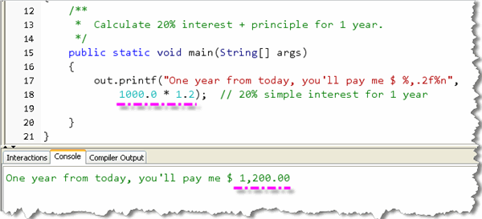
With simple interest, when the year's up, you write me a check for $1,200, and everybody's happy.Well, almost everybody!
My wife really doesn't like the deal. "Make him pay you back a little bit each month", she says. "That way, if he loses his job, we won't lose the entire thousand as well as the interest."
Now, the question is, how much should you pay me back each month? When you first look at the problem, it looks simple. 20% interest on a thousand dollars is $200, for a total of $1,200, so the monthly payments should be $100, right?
Well, I'm perfectly willing to lend you money on those terms, but it really isn't a good deal for you. That's because in the simple interest example, you got to keep my thousand for the entire year. In the revised example, you only get to keep part of my money for the entire year, but pay "rent" on the entire amount.
Monthly Payments
So, how should we correctly calculate the payments? Like this:
- For the first month, you kept my entire thousand, so you should pay me one month's interest on the whole thing. Now one month's interest is 20% / 12 * $1,000 or $16.67. The remaining $83.33 is just returning me part of the money that I lent you.
- In the second month, you only have $916.67 of my money, so you shouldn't have to pay as much interest. Instead of $16.67 you only have to pay $15.28, and the rest goes to pay me back a little more on my original thousand.
If you keep this up, you'll see that you end up paying me back all of my money way before the entire year is up. Of course, you don't want to do that! You'd rather pay me back less money each month, so the payments come out even. How do we calculate what those payments should be?
Rather than going back and forth, lowering the payments, and then increasing them, until you come out with the right amount at the end, you can use a calculation, like the one shown here, from a finance textbook:
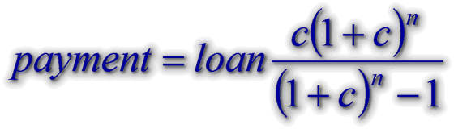
In this case:- c stands for the monthly (or period) interest rate.
- n stands for the number of months or payments.
I don't really recommend the names n and c
for your programs. I've used them here only because those were the names
used in the financial function that I copied from the textbook.
We can put this into a program, along with some variables to make the
program interactive, and end up with a useful loan calculator:
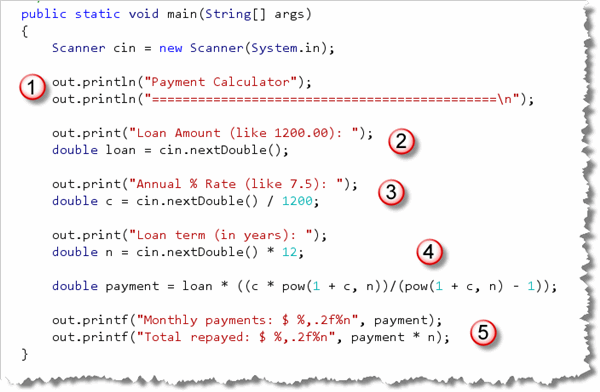
Here's what the program looks like when run against the $1,000 I lent you at the beginning of this section: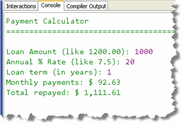
Notice that instead of paying me back $100 a month, your actual payments are only $92.63.
Here are some program notes:
- The program asks the user for the loan amount, annual interest rate,
and term of the loan in years. These are stored in
doublevariables. - For the interest rate, the user's input is divided by 1200 because we need the monthly interest rate in the formula. (That's 100, because we want to turn the entered value 7.5 into the mathematical annual percentage .075, and 12 because we want to convert from annual to monthly.) If you wanted to print the annual rate as part of the message to the user, you might want to do this calculation separately and store that in another variable.
- Similarly, the term in years input by the user is multiplied
by 12 to store the number of monthly periods in the variable
n, which is what the formula requires. - The
Math.powfunction is used to calculate the payment, using the formula from the textbook. (There are other formulas you can use as well.) Because I added the lineimport static java.lang.Math.*;to the top of my program, I don't have to prefix each use of thepow()function with the name of theMathclass. - Finally, the program prints out the value for the monthly payment as well as the total future (total) value of all the payments.
Procedures and Parameters
Instead of writing a stand-alone program that gets the user's input, calculates the payment, and then prints the results, it would be more useful to put your code into procedures that could be reused whenever you wanted.
Here's a first attempt. I made a copy of
PaymentCalculator.java and renamed the copy
PaymentCalculatorProcedures. Then, inside the program
I moved the calculations and the printing into a
new procedure named printLoanData(),
just like you did earlier, when you studied functional
decomposition:
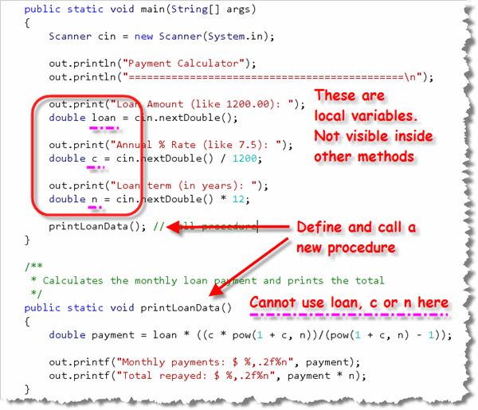
Unfortunately, this doesn't work as cleanly as it did with the Abacus program. That's because the variablesloan, c and
n are all local to the main()
method. When you define a variable inside a procedure, you can
only use that variable inside the same procedure,
not inside another procedure like
printLoanData().
When you try to compile PaymentCalculatorProcedures,
you'll see a slew of error messages that look like this:
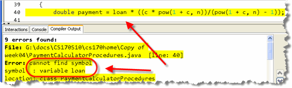
As you can see, inside theprintLoanData() method,
the Java compiler cannot see the variable named loan,
since it was defined and initialized in another method
(main()).
Arguments and Parameters
Most procedures and functions require additional input information
to carry out their work. A method that computes square roots, for instance,
requires the number to operate on. The printLoanData()
procedure shown here, requires the loan amount, the monthly rate and
the term of the loan before it can calculate the payments.
Fortunately, it is very easy to do this by writing your procedures and functions so that they accept arguments, and then placing those arguments into parameters.
What are Arguments?
When you call a method, you pass values (which are called
arguments) to the method. Let's see how that works in our case
by passing the loan amount,
annual rate and term in years as arguments when we
call the printLoanData() procedure:
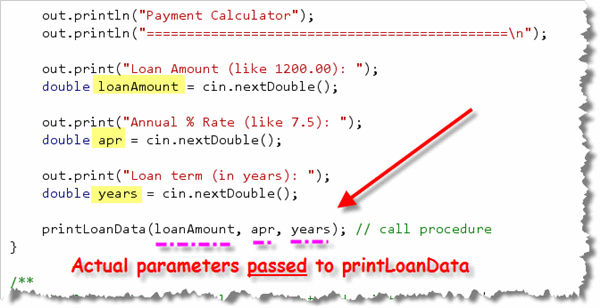
In addition to passing three arguments, I've also "cleaned up" the code a little. Notice that I have:- Changed the names of each of the variables to make the program clearer.
- Called the
nextDouble()input function to accept the user's input and store it in my three variables. - Skipped the calculations previously used to turn rate into a monthly rate and years into months. I'll make those adjustments when I calculate the payment inside the procedure.
- Passed each of the three variables to
printLoanData()by placing them in the argument list which, up until now, we've left empty.
If I compile after making these changes, I'll actually get more errors that I did before, because when I defined the procedure, I didn't define any parameters to match the arguments that I've passed when calling the procedure.
Let's change that now.
What are Parameters?
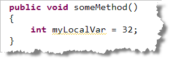
A parameter is simply a local variable, specifically designed to transfer information from one method to another. A regular local variable, for instance, is declared like this. This variable declaration creates
a "bucket" where you can store a value—in this case,
myLocalVar is an int-sized
bucket that can hold an int value. The
actual value, 32 is stored in the "bucket" when
it is initialized; however, the initialization must happen
inside the method—there is no way to initialize the
local variable from outside.
A parameter works exactly like this local variable except:
- A parameter is declared inside the parameter
list—that is,
inside the parentheses following the method name—and
not inside the method body. In the example shown here,
I've defined two parameters, the
int p1and thedouble p2.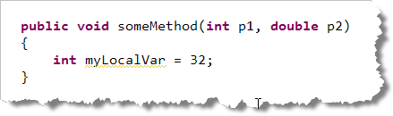
- Each parameter declaration must include both the
type of the variable and a name. Separate parameter definitions
with a comma. When declaring regular local variables,
you may use this syntax:
int a, b, c;
This kind of syntax is not legal when declaring parameters; each parameter must have both a name and a type. - A parameter is initialized by calling the method, not by using the assignment operator.
To change the definition of printLoanData()
to add the three parameters that are needed, you would
write something like this:
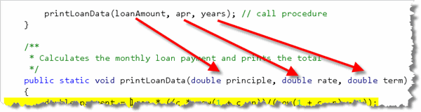
Each parameter is a complete variable declaration with its own type and name. The names used for the parameters here, do not have to be the same as the names of the arguments used when calling the procedure. (They could be the same name, but I've used different names to highlight the fact that these are different variables.) To initialize the parameters principle,
rate and term, you pass different
values as arguments. The arguments are values supplied
when you call the procedure. When
you call printLoanData(), the values stored in the
variables loanAmount, apr and years
in the run() method are used to initialize the
parameters in printLoanData(), exactly as if
the procedure started with this line:
public static void printLoanData()
{
double principle = loanAmount;
double rate = apr;
double term = years;
When you create a local variable and initialize it inside
a procedure, the local variable (like the example myLocalVar
shown earlier) has the same value (32) every time that
the procedure is called. In contrast, the parameters
principle, rate and term
may have different values each time printLoanData()
is called. This means that by calling a procedure using different
arguments, you can customize the
way that the method behaves.
Finishing printLoanData()
If you are typing along and try to compile, you'll see that DrJava reports that
printLoanData() still has errors! That's because
the names of the parameters, and the names of the variables
used in the actual calculations are different.
To fix this, just create local variables for c and
n, using the formal parameters. Then, change the
formula to use principle
instead of loan like this:
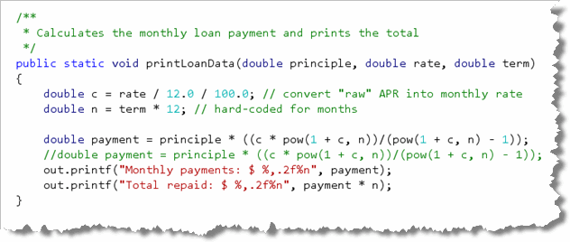
Pass By Value
When you call a method, the parameter receives a copy of the agument. This is called pass by value. The arguments may be either literals or variables; in both cases a copy is made.
Suppose, for instance, inside your main() method
that you have two local variables, named
a and b, containing the values
52 and 17. Now, suppose that you
called myMethod() and passed as arguments,
the variables a, and b.
When you pass the variables a and b to
the method myMethod(), the values 52 and
17 are copied into the parameters j
and k, as shown here:
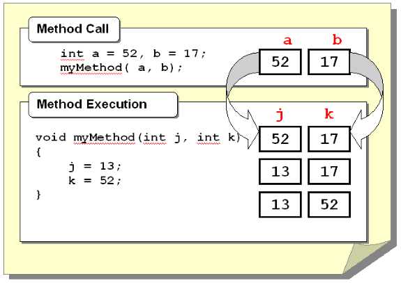
In the example shown here, the parametersj
and k are changed inside the method to 13
and 52. This has no effect at all on the variables
a and b.
Type Checking
When you call a method, the actual parameters you pass must be compatible with the types of the formal parameters. Java will attempt to ensure this using a process called type-checking.
Generally, what this means is that when a method is expecting a
String parameter, you can't pass an int,
and vice-versa. As you saw when we looked at Java's
primitive types, there are some numeric types that are compatible
with each other, and some that are not. For instance, if a method
is expecting a floating-point number, you can usually pass it an
int, but the reverse isn't true.
Type checking doesn't catch every error when
you pass arguments to methods. If you write:
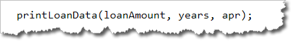
the compiler will not catch your error. Because bothapr and years have the same type
(double), the compiler doesn't distinguish between them.
All it's doing is checking to see that you are passing the
right kind of value, not the right value.
This will result in a logic error, since the APR will be
used for the term in the calculation, and vice-versa.